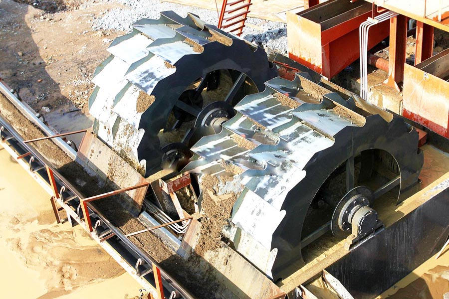

Construction waste crushing production line

Mobile construction waste crushing station for urban construction waste crushing.
Mobile Sand Washing Machine
Mobile Sand Washing Machine， Wheel Sand Washing Machine, Wheel sand washing machine prices, wheel sand washing machine manufacturers, GXS series of highly efficient wheel sand washing machine is a kind of wheeled washing equipment. The aircraft introduction of advanced technology, integrated the actual situation of the domestic sand and gravel industry developed, mainly for washing and dewatering building, gravel and other materials, it has a clean and high, reasonable structure.
Sand Washing Machine, Wheel sand washing machine, sand washing machine, spiral sand washing machine, sand washing machine is wheeled artificial sand (including natural sand) washing equipment, sand production line, stone production line essential Sand products. Wheel Sand Washing Machine Sand made out of mixed sand can be washed away traces of powder and impurities.

CAG screw sand washing machine is mainly used for sand processing, electric pole factory, building work site and concrete dam, various sands classifying and dewatering.This sand washer adopts inclination of 15º, under the water tub, three weir plates form the sediment pool, the screw head is immersed in this pool, the screw is driven by electric motor through reducer rotating continuously, the fresh water is feeding from porous plate at bottom of sediment pool, this machine have three functions of washing, dewatering, classifying. LXS series screw sand washing machine can be used to separate dirt and soil from sand. The new sealing structure, asjustable overflow weir plate, reliable transmission make sure the cleaning and dewatering. It is suited in highway, hydroelectic, building and construction area.
Wheel sand washing machine for sand factory, construction site, hydroelectric dams, glass manufacturing, oil sand development industry and other units. I produced the XSD Series Wheel sand washing machine is in line with a washed sand Sand formula used by the necessary equipment.
Tanzania sand washing machine for sale. Working Principle of Screw : Sand Washing Machine Washing: The sand is feeding into the sediment pool from the feeding box, acting by rotating screw blade, the sand is turning and rolling and grinding each other to eliminate impurity and water-air layer around sand to facilitate de-water. The fresh eater rising current from the porous plate carry foreign matter to water surface and overflow the weir plate, to finish washing processing De-watering: The sand with bigger density is sunken down to tub bottom; the screw blade push this sand upwards, when passing through upper tub of proper length above water level, the water is draining into sediment pool from another drainage ditch, the de-watered sand is out from the discharging opening. Classifying: Material classifying is realized by overflowing the non-needed fines, the controlling method is adjusting height of overflowing weir and adjusting speed of screw. Features and Application Spiral sand washing machine is mainly applied to washing minerals of large slit content, such as iron, manganese, limestone, tin ore, etc. It carries out mixing, washing, separating, and des CAG. With a washing pressure less than 147-196kpa, it is also suitable for washing building materials in construction and power station applications. The gear transmission parts of our spiral washing machine are separated from stones, water and sands, which greatly reduces the error rate of our spiral washing machine. Spiral washing machine has features like long spiral structure, good sealing system, simple structure, strong processing capability, convenient maintenance, good washing efficiency, etc. It is widely used in mining industry.
Supply Wheel sand washing machine production line, sand washing machine works, sand washing Sand full set of equipment, sand washing machine can clean separation of the powder sand soil, its novel sealing structure, reliable transmission device, make sure the cleaning of effect, is an important device with sand.
Tanzania sand washing machine suppliers. Efficient Wheel Sand Washing Machine sand washing machine sand washing machine drum spiral sand washing machine equipment, and efficient sand washing machine, sand washing machine Great Wall company specializing in the production of sand washing machine, sand washing machine equipment at reasonable prices, good service is ideal for your choice to provide you with the installation, commissioning, personnel guidance
Leave Me A Message, Now
If you have any questions regarding equipment prices, production line configuration or other problems, you can send a message to us, we will contact you soon.